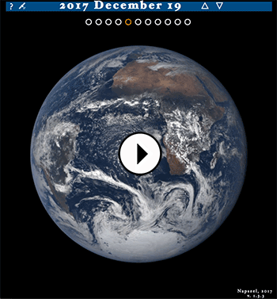

Pale Blue Dot - a NASA Datanauts project
Project at palebluedot.napszel.com | Source code on GitHub | Contact me at eva@napszel.com

Look again at that dot. That's here. That's home. That's us. On it everyone you love, everyone you know, everyone you ever heard of, every human being who ever was, lived out their lives. ... -on a mote of dust suspended in a sunbeam.
-- Carl Sagan, Pale Blue Dot, 1994
Executive summary
As a volunteer to NASA, I have reimplemented the data storage and the UI for the EPIC image archive. The end users can use the new solution to browse the image archive using a streamlined user experience, with considerably better image loading times. Sharing specific images with friends are made easy by simply copying the URL. The new solution is also comfortable to use from mobile and tablet devices which are being increasingly more important for publicity projects of NASA.
This document details the engineering methods and technical solutions that I have used to achieve these usability gains. It aims to be understandable by anyone with minimal computer science knowledge.
Being a NASA Datanaut
NASA Datanauts is a community of volunteer data scientists who work with NASA's open data to solve data challenges. Every half a year the Datanauts founding class welcomes 50 newcomers to join the community to advance their data science skills. Datanauts engage with each other and subject matter experts, listen to presentations, learn by completing challenges and work on their own projects.
I joined Datanauts as a member of the 2017 Spring Class. As my project I decided to work with the images taken by NASA's Earth Polychromatic Imaging Camera (EPIC).
This camera takes multiple colored images every day of the entire sunlit face of the Earth. The spacecraft is located at the Earth-Sun Lagrange-1 (L-1) point giving EPIC a unique angular perspective. It has a field of view of 0.62 degrees, which is sufficient to image the entire Earth. Its distance from our planet also allows it to capture Moon transits.
The Pale Blue Dot project
The goal of Pale Blue Dot was to create a web page where the hundreds of images taken by EPIC can be viewed in an intuitive and enjoyable way. The main requirements set were the following:
Mobile compatible web page.
No user interface clutter: not even buttons are needed to navigate.
The possibility to see the images almost full screen: as big as possible.
A very responsive experience: minimal waiting time if any.
These will hopefully ensure that rather than getting lost in the UI the users can submerge in the experience instead.
The final UI of the Pale Blue Dot project website looks like this:
About this document
Even though at first sight the project might look easy and straight forward, actually many things had to be considered and implemented both on the front-end and the back-end to make sure that the goals were achieved.
In this document you can read about all the problems that have risen and their solutions in detail.
Disclaimer: The mentioned numbers about download times on "fast" and "gigabit" internet were measured on a gigabit connection in Switzerland. The referenced "slow" and "mobile" internet speeds were measured on Chrome browser by limiting the download speed and latency with the built in developer tools to "3G".
Table of contents
1. JavaScript UX/UI - Front-end
1.1. Navigation - no buttons necessary
1.2. URL handling - edit the links
1.3. Updating the URL - share the links
1.4. Browser's Back and Forward buttons - feel free to use them
1.5. History - updating the title of the page
1.6. Preserving selected longitude
1.7. CSS media query - try it on mobile.
2. Serving the assets - Back-end
2.1. The NASA server's JSON files
2.3. Scripts for the JSON files
2.4. Image sizes and download times
2.5. Serving the images - MaxCDN
2.6. Scripts for MaxCDN
3. Image manipulation - Back-end
3.3. Big image
3.4. Scripts for image manipulation
3.5. Parallel loading
3.7. Download biggest resolution image
5. Error reporting - TrackJS - Monitoring
5.1. Catching errors
5.2. Debugging
1. JavaScript UX/UI
The first version of the project was pure Javascript that downloaded data directly from NASA's servers. At this stage the focus was on perfecting the User Experience.
1.1. Navigation - no buttons necessary
Instead of buttons and sliders you can scroll with your mouse (or touchpad) to go back in time and load older images. To rotate Earth you can click and drag it. Similarly on mobile: use finger swipe up/down and left/right to change date and rotate Earth.
Additionally, subtle UI buttons (dots and arrows) are also available for precise navigation.


The UI allows both fast and slow navigation: a small scroll/swipe or arrow click changes the date just by one day. With a few fast scrolls/swipes you can easily go back to images of the past year.
To make sure that every user action has an instant feedback on the UI, a fast scroll will instantly update the date label to show the currently selected date. Even if the user has to wait a little for the images to load.
1.2. URL handling - edit the links
The Website's URL has the format palebluedot.napszel.com/#2017-06-26/19. That is: a hashmark followed by a date (separated by dashes) followed by a slash and a longitude number. Navigating to this URL will display an Earth image taken on 2017 June 26th showing Europe/Africa (longitude 19). You may copy-paste such paths for sharing.
You are also free to edit the URLs to achieve fast and precise navigation. The application will search for the images taken on the supplied date (or if there are no images on the given day then the closest earlier date). Then it will search for the Earth rotation that is closest to the supplied longitude.
You may also enter only a date (palebluedot.napszel.com/#2017-12-19) or only a longitude (palebluedot.napszel.com/#-74). In that case the other will take a default value ('today' for date and '-74' for longitude). If neither (palebluedot.napszel.com) or 'latest' (palebluedot.napszel.com/#latest) is given then both takes the default value which results in the latest image of America.
1.3. Updating the URL - share the links
As explained above, if the URL is edited by the user the application catches this event and the UI is updated accordingly. The opposite also had to be implemented: if the UI changes based on user action the fragment identifiers in the URL have to be edited.
For example if the user navigates back one day from the latest images then the path will change from palebluedot.napszel.com/#latest to palebluedot.napszel.com/#2018-01-14/-74 in case this happened on Jan 16th.
The path is continuously kept up to date with every image change. This means that the path always specifies exactly that single image that is currently shown on the screen. It is enough to copy and paste the URL in the browser window to share a specific image with a friend.
Note that NASA does not publish images from the satellite every day. For example 2018 Jan 15th has no images to show (but the day before and the day after has). Going back one day from Jan 16th will skip 15th and update the date on the UI and in the path to Jan 14th and load those images.
1.4. Browser's Back and Forward buttons
The application does not load different HTML resources when navigating on the UI. This means that the browser's Back and Forward buttons would load the wrong page by default. For them to work correctly, the application has to manage the browser history with HTML5 APIs.
For example, in case you go back one day in time, the application will edit the date part of the path (explained in the previous point) and push it to history. Now if you click the browser's Back button, you are taken back to today.

But not all navigation results in a path editing and history update. Consider the case where the user scrolls back 10 days very quickly with a mouse scroll or finger swipe. In this case if the path were edited to all dates during the scroll the browser's history would be polluted with day references which the user did not really have the time to look at (the images might have been not even loaded). To circumvent this, the path is only updated and pushed to history after you spend at least half a second viewing a day.
1.5. History - updating the title of the page
Browsers save your page visits in a list called history. If you check this list, you will see that it only shows the title of each page you visited.
In order to have meaningful history items for Pale Blue Dot the page's title is always edited according to the date/longitude selected (similarly how the URL is also edited). This way, instead of just seeing ~ Pale Blue Dot ~, ~ Pale Blue Dot ~, ~ Pale Blue Dot ~ you also see dates and longitudes of the days you have visited.

1.6. Preserving selected longitude
Scrolling up and down between days preserves the longitude setting. This means that if you are viewing the European continent and then navigate to previous days, the application will always select the images closest to the European continent in previous days also.
But what if there are no close matches? For example on the day of the August 21st 2017 solar eclipse, multiple images were taken of the American continent to capture the event but none of Europe. If you are viewing an image of Europe from 22nd August and scroll to 21st of August the application will "jump" to the American continent. This is inevitable. However, if you continue going back one more day in August you will see Europe again.
This allows a nice way for example to scroll through a year and see how Europe changes during the seasons. Even if there are occasional jumps east and west. If this feature was not implemented the view point of Earth would seemingly jump around randomly and not return to the user's original longitude request.
To achieve this experience the longitude part of the URL is not updated in case of date changes. The longitude number seen in the path is only a "goal" longitude. Meaning that the image shown by the app is the closest image to that longitude but not necessarily the exact match.
This goal longitude is only updated by the app in case the user rotates the earth left or right with click and drag or finger swipe. After this event the goal longitude is updated in the URL.
1.7. CSS media query - try it on mobile
Mobile screens are naturally smaller and required a slightly different UI arrangement to fit everything on screen. CSS media queries were used to change the layout for any screen below 670px.
Screenshot of the UI on a mobile device:

Since the threshold for "too small screen" is based on browser window size and not based on device type, the same rearranging of the UI happens on a regular desktop too if the browser window is shrunk.
2. Serving the assets
After the User Interface is ready and the navigation is intuitive, comes the question of speed. An interactive UI that wants to be enjoyable has to respond to every user action in under 100ms worst case. Even if the implementation gives a simple way to change dates, if the new image takes 3-5 seconds to load, it will quickly bore the user and hinder a positive experience.
Especially, if the UI gives options to change views very quickly, the site has to be responsive. If the users were to change date with a date selector, they might be more forgiving in waiting time. However, one of the goals of the project was to be able to enjoy these beautiful cloudy Earth images swirling, so waiting time was not something I wanted to compromise on.
2.1. The NASA server's JSON files
NASA stores these images on the server epic.gsfc.nasa.gov which accepts requests through an open API. To find out the available images (names and many other information) for a given day, you can request a JSON file. This means you have to download one JSON file to show the images of one day. For example part of the JSON file for 2015-10-31:
[
{
"identifier":"20151031003633",
"caption":"This image was taken by NASA's EPIC camera onboard the NOAA DSCOVR spacecraft",
* "image":"epic_RGB_20151031003633",
"version":"01",
"centroid_coordinates":{
"lat":-5.102852,
"lon":159.542508
},
"dscovr_j2000_position":{
"x":-1283061.502946,
"y":-669893.465826,
"z":-130240.863464
},
"lunar_j2000_position":{
"x":33466.895832,
"y":354549.449169,
"z":116876.96183
},
"sun_j2000_position":{
"x":-118557507.99999,
"y":-82106194.000015,
"z":-35593694.71975
},
"attitude_quaternions":{
"q0":-0.308502,
"q1":-0.119342,
"q2":0.210556,
"q3":0.919914
},
* "date":"2015-10-31 00:31:45",
"coords":{
"centroid_coordinates":{
"lat":-5.102852,
* "lon":159.542508
},
"dscovr_j2000_position":{
"x":-1283061.502946,
"y":-669893.465826,
"z":-130240.863464
},
"lunar_j2000_position":{
"x":33466.895832,
"y":354549.449169,
"z":116876.96183
},
"sun_j2000_position":{
"x":-118557507.99999,
"y":-82106194.000015,
"z":-35593694.71975
},
"attitude_quaternions":{
"q0":-0.308502,
"q1":-0.119342,
"q2":0.210556,
"q3":0.919914
}
}
},
...
]This extract shows the information for one image of the given date. The camera might take as many as 22 images per day. A full JSON file for such day is around 22 kilobytes.
That might not sound like a huge amount of data. However, there is only one NASA server located in the USA so latency becomes an issue from Europe and Asia. No matter of the speed of your internet, if you are located in Europe there will be around 200ms latency between your client and the NASA server (interestingly, even the theoretical limit based on speed of light would be around 30ms). With this latency, downloading a small file is around 0.5s. Therefore we can't afford to do this multiple times for every UI action, we have to batch data. These numbers would be even worse from Asia.
And we are only talking about downloading the JSON file for one day. We are not yet talking about downloading the much bigger image files themselves.
2.2. Serving the JSON files
The JSON files provided by NASA contained too many unnecessary information for my project and is serviced too slow for the UX I had in mind. See in the previous file example - marked with asterisks - the 3 data that I actually need for one image: name, longitude and date.
To improve on speed the JSON files were compacted and serviced from our own server.
To shrink the JSON files the images are grouped together by date. This way only a list of name-longitude pairs are left. When the days are also grouped together in one singe JSON file we get this format:
[
{
"d":"2015-10-12",
"n":21,
"i":[
"epic_1b_20151012000830",
"epic_1b_20151012011358",
"epic_1b_20151012032454",
"epic_1b_20151012043021",
"epic_1b_20151012053549",
"epic_1b_20151012064118",
"epic_1b_20151012074645",
"epic_1b_20151012085213",
"epic_1b_20151012095741",
"epic_1b_20151012110308",
"epic_1b_20151012120836",
"epic_1b_20151012131404",
"epic_1b_20151012141932",
"epic_1b_20151012152459",
"epic_1b_20151012163027",
"epic_1b_20151012173555",
"epic_1b_20151012184122",
"epic_1b_20151012205219",
"epic_1b_20151012215747",
"epic_1b_20151012230314",
"epic_1b_20151012021926"
],
"l":[
166.151121,
149.782218,
117.048651,
100.679819,
84.31101,
67.942223,
51.577625,
35.208885,
18.840167,
2.47147,
-13.893037,
-30.261688,
-46.630318,
-62.998926,
-79.363345,
-95.731908,
-112.10045,
-144.837471,
-161.205948,
-177.570236,
133.41334
]
},
...
]This extract shows the information for one day with 21 images. The rest of the days would follow after. So instead of having one JSON file for one day we have one JSON file for all data (all days). Roughly storing the same amount of information for one day as for one image before.
At the time of writing this document, the full JSON file with all the days concatenated together from the beginning of EPIC's life is 418 kilobytes. This single file is enough to be downloaded once by the application - right at page load - and then the application can access the data needed for specific day and rotation from local memory in an instant.
2.3. Scripts for the JSON files
To serve this JSON file from our server (an Amazon Web Services virtual machine) the following scripts were implemented:
a. download-recent-jsons.sh: A Bash script that downloads recent JSON files from NASA server.
b. fix-nasajson.py: A Python script that sorts each daily JSON file based on coordinates.
c. nasajsons-to-allnasa.py: A Python script that concatenates the sorted daily JSON files into one single JSON file sorted by date (in the format shown above).
d. daily.sh: A Bash script that runs all of the above in order.
e. And finally a cronjob that runs the previous Bash script daily.
You can find all back-end scripts on the project's Github page: https://github.com/NASADatanauts/PaleBlueDot/blob/master/backend-scripts/
2.4. Image sizes and download times
The reformatting and serving of the JSON file improved on speed significantly but the huge size of the images were still making the UX too slow.
NASA gives options to download the images in 3 formats:
- png, 2048x2048 pixels, ~3MB file size
- jpg, 1080x1080 pixels, ~190KB file size
- jpg, 120x120 pixels, thumbnail
The thumbnails are obviously not big enough to be shown in full screen. Out of the other two formats, even the smaller jpg format takes around 1.5 seconds to download for a user in Europe even on a gigabit internet, because of the NASA server's latency and bandwidth issues.
More specifically, the issue is partly because of the distance to the NASA server: a user from Europe will experience a minimum of 200ms latency. Because of the size of the images this goes up to 1.5s in total download time. In the USA this should be around 1s but even worse than 1.5s in Asia. We are talking about one image of a particular day.
Waiting around 1 second every time the user tries to navigate around the images results in a sluggish user experience instead of an interactive UI.
2.5. Serving the images - MaxCDN
To solve the latency issues for users located far from the only NASA server a Content Distribution Network (CDN) comes to mind. That is, a geographically distributed network of servers that store the NASA images and can globally serve them quickly.
It is possible to buy such CDN services for a relatively small monthly fee. However, it is important to understand the different solutions they offer and to pick the correct one for the project to actually make it faster.
The most common mode of operation a CDN service will offer is a so called CDN pull zone. This means they "pull" the static assets from your project to cache it and serve it from their CDN Network. However, "pulling" only happens if an asset is requested by a user and the cache is cleared usually after 24 hours. This kind of CDN is useful for websites with many visits, requesting the same assets over and over again (e.g. software downloads, popular videos).
It is easy to see that for the images of the Pale Blue Dot project this would not be of much use. After a user loads the images of today, they have hundreds of other options for images they might want to load next. So it is very unlikely that even two users will request the same assets and so they would not see any advantage of a pull zone.
What the Pale Blue Dot project needed was a much less common feature, called a CDN push zone. The only service found (middle of 2017) that offered this feature was MaxCDN. A MaxCDN push zone gives you the option to directly upload your files to a server which is then synced out to the distribution network. So even the first user gets serviced fast and the assets never get cleared like caches on a pull zone.
Having the huge images and the optimized JSON file in a Content Distribution Network (updated and pushed every night) maximally optimized the download speed of assets, for every user, anywhere in the world. The download times of images went to 0.1 sec (for users with a gigabit internet) which gives a smooth user experience navigating between any of the Earth images. This would have been impossible with the NASA provided API.
Unfortunately, MaxCDN's does not operate mirrors for the push zone data in Asia. But after researching the possible service providers there is no better option currently (because all of them are focusing on perfecting their pull offerings). The only way to solve the latency issue in Asia would be to implement our own "mini push zone" solution with AWS.
2.6. Scripts for MaxCDN
To serve the images and the JSON file from a MaxCDN push zone the following scripts were implemented and added to our own server (an Amazon Web Services virtual machine):
a. download-images-for-day.sh: A Bash script that downloads all new images daily.
b. upload-day.sh: A Bash script that pushes the images to MaxCDN.
c. upload-allnasa.sh: A Bash script that pushes our reformatted JSON file to MaxCDN.
You can find all back-end scripts on the project's Github page: https://github.com/NASADatanauts/PaleBlueDot/blob/master/backend-scripts/
3. Image manipulation
The user experience on a gigabit internet is flawless at this point with the minimized, single JSON file and assets distributed from a CDN. But of course not everybody has a gigabit internet. Even if you do, you might be traveling or on mobile data.
There is nothing really left to optimize on the server, it services the JSON file and images as fast as it is possible. The only thing left to improve is the size of the images it has to service.
3.1. Individual thumbnails
The idea is to show a smaller resolution version of the requested image (stretched to full size) in place of the real one until the full resolution image loads.
The goal is to make these initial thumbnail images small enough that the application is able to instantly respond to user interaction with them (less than a second of download time even on mobile internet) but also big enough that the user sees what they are looking at.
There are thumbnails provided by the NASA API but they are so low resolution that they looked unacceptable when stretched to full screen.
This is an example of a NASA provided thumbnail stretched to 1024x1024 (5KB):

However, with a little image conversion (with the ImageMagick tool) the Pale Blue Dot project generates their own thumbnails which are only 3KB more in size but are looking much better in 1024x1024:

The download time for these thumbnails are 20ms on a gigabit internet and 600ms on 3G. The latter is already fast enough that it provides a smooth user experience.
3.2. Concatenated thumbnails
But there is still an improvement that removes some of those 20-600ms waiting times.
The second improvement idea came from the assumption that once a user stops on a date, they will most likely rotate Earth.
To make sure that Earth rotations cause absolutely no delay, there is an additional image download that starts in the background once the user stopped changing dates: a concatenated image of all thumbnail images for the particular day. See example of this below.

This image is "cut and zoomed in" when the user rotates Earth. This means that once this image is downloaded, the user is free to rotate Earth left and right with no delay and no network requests. Even if the user loses internet connection they can still enjoy the currently selected day (in thumbnail quality).
These concatenated thumbnails are around ~60KB depending on how many images were taken on that day. This takes 40ms to download on gigabit internet and around 1.2s on a slow mobile internet.
3.3. Big image
All of the above image manipulation with smaller resolution images is only needed to make sure that the user experience is smooth and without any visible waiting time. But at the end of the day, the app has to download and display a full screen version of the image requested.
As mentioned before, the NASA API provides 1080x1080 pixel image files that are around 190KB each. These are the images that you see on the official EPIC website.
Also, the NASA API provides "full resolution" image downloads that are 2048x2048 in pixels and around 3MB in size. The EPIC website lets you to download these with a button but doesn't display them. This is a good choice as downloading and attempting to display such big resolution images would be unnecessary as it would use considerable amount of network traffic and most screens would have to shrink it anyway as they do not fit on screen.
The Pale Blue Dot website works similarly to the official EPIC Website as it also displays 1024x1024 images in full screen and only offers a download button for the twice as big full resolution images (see point 3.7). However, it achieves a 40% reduction in image size for the displayed full screen images with no visible quality loss.
Pale Blue Dot downloads the biggest resolution images (the 2048x2048 ones) daily at night, then converts them (with the ImageMagick tool) to a smaller jpg version that is 1024x1024 pixels and only around 120KB in size. Which is even smaller than the NASA API provided full size jpg images but result in no visible quality loss.
See below the Pale Blue Dot generated 1024x1024 pixels jpg that is 115KB in size. Hover the image to see the NASA API provided 1080x1080 jpg which is 195KB. Do you see any quality loss?
3.4. Scripts for image manipulation
To generate the previously described thumbnails the concatenated images and the optimized big images the following scripts were implemented and added to our own server (an Amazon Web Services virtual machine):
a. resize-images-for-day.sh: A Bash script that generates the needed thumbnails.
b. concat.scans: A magic script that concatenates the thumbnails.
c. save-images-for-day.sh: A Bash script that saves the images generated by the previous two scripts.
d. do-image-for-day.sh: A Bash script that runs all of the above in order.
You can find all back-end scripts on the project's Github page: https://github.com/NASADatanauts/PaleBlueDot/blob/master/backend-scripts/
3.5. Parallel loading
As hinted before, all image downloads happen in parallel. When a user stops on a particular image of a particular day the following image downloads start in parallel:
a. Small thumbnail of the image of date/longitude; ~8KB, ~20ms-600ms
b. Full size version of the image of date/longitude; ~120KB; 50-2600ms
c. Concatenated thumbnails of images of date; ~60KB, 40-1200ms
The user sees the small thumbnail first (a). This is almost instant. The full size version of the same image is downloading in the background. As soon as it is loaded (b) it replaces the small resolution image. During these two downloads the concatenated thumbnails were also downloading in the background (c). Once that is finished, there is no download time to show Earth from any point of view on that day.
3.6. Canceling of obsolete
Modern browser are built in with a feature that cancels downloads that became unnecessary. For example, if the DOM element that caused the request got deleted or one particular object's source were overwritten with a new resource. In both cases the original resource's download can be canceled as it will surely no longer be needed.
To make sure that the Pale Blue Dot website takes advantage of this feature, the full resolution images are loaded into the same object. This means that if you navigate away from a date before the image has been loaded the obsolete request is canceled and the currently needed image's download is started instead.
See a screenshot of Google Chrome's network logging. All the red lines show canceled downloads of images of days that the user quickly skipped over.
This also means that scrolling through a bulk of images from different days does not accumulate downloads and so, does not lag the UI. Loading a day from a year before takes the same amount of time as loading today's images.
3.7. Download biggest resolution image
At this point the shown images are fully optimized for maximum speed and usability. However, if speed is not an issue then having access to the best quality images can come in handy.
For this reason, the UI has a download button under each image that opens the biggest resolution image, directly from NASA's EPIC website. You can right click and select "Save Link As..." to download the 2048x2048 image to your computer or left click to open it in a new browser tab to view it full size.
4. Improvements rundown
To visualize the improvements, here are the download sizes and download times needed to display one single random image after page load. Comparing NASA API supported options to features implemented by Pale Blue Dot.
Download times needed for one random image:
| NASA API | PaleBlueDot | |
|---|---|---|
| JSON File | >1s | 0s |
| Image asset | >1.5s | 0.1-0.4s |
| TOTAL | >2.5s | 0.1-0.4s |
Download sizes needed for one random image:
| NASA API | PaleBlueDot | |
|---|---|---|
| JSON File | ~22KB | - |
| Image asset | ~190KB | ~125KB |
| TOTAL | ~212KB | ~125KB |
Note that NASA API's download times depend also on geographical location of the user as well as internet speed. The download time shown here is the minimum time needed even on gigabit internet. Pale Blue Dot download times only depend on internet speed of the user because of the MaxCDN solution explained in point 2.5.
Also note that Pale Blue Dot does not require to download a JSON file to display a new image because of the restructuring of the file seen in point 2.2.
Finally, because of the image thumbnail pre loading of Pale Blue Dot (seen in point 3.1) the download time results are about the same on mobile internet as on gigabit internet. The difference will be in the initial quality of the image rather than longer waiting time.
5. Error reporting - TrackJS
To make sure that the quality of the website is kept over time and users from all type of Operating Systems and Web Browsers can enjoy it, an error reporting system has been integrated into the code.
The error reporting tool that was chosen is called TrackJS. It reports every javascript error that occurs to any user. Error reports are logged together with stacktrace, OS/Browser details and some other statistics.
5.1. Catching errors
For example, there was a Spread syntax in the first version of the javascript code. But one day, TrackJS sent a notification that this particular line caused an error for a user who was using a specific OS with a specific browser. So rather than never finding out about this issue, the code was quickly refactored and hopefully one user gained back and other future users never lost.
5.2. Debugging
An other useful specialty of TrackJS that the Pale Blue Dot project is using is the trackjs.console.log. You have the option to push logs to TrackJS that does not show up in the browser's console window (or anywhere else for that matter) but TrackJS stores it for your project, you just need a trick to access it. This allows to have an instant "debug" feature the following way:
When an error is caught by TrackJS, it will be displayed on your Dashboard together with the most recent trackjs.console.logs. So simply any error has to be triggered to get access to your debug logs. For this reason if you edit the URL of Pale Blue Dot to contain the word debug, you will see a deliberate error in the console "trackjs debug push":
...and now, TrackJS Dashboard will show that there has been an error with some debug logs around it:
I use this feature to log some image download times. For example, if while traveling and testing the website from different locations/browsers, something suspicious happens I can trigger a debug. This causes TrackJS to log the event together with statistics so later it can be viewed and examined.
6. Future development ideas
- Better compact the JSON file that describes the images.
- Building a mini push CDN on AWS (that will also cover Asia); based on a quick calculation the cost of this would be $50-150 / month.
- Use tiny, actual image thumbnails instead of circles for navigation.
- Include further information of each image. For example: EPIC's distance from Earth when the image was taken.
- Include 'Enhanced Color Images' provided by NASA.
- Add a subtle date selector which displays which days have images.
Feedback
Feel free to drop me an email with any questions/comments at eva@napszel.com.
If you would like to report a bug or submit a feature request, use to the project's GitHub page: https://github.com/NASADatanauts/PaleBlueDot.